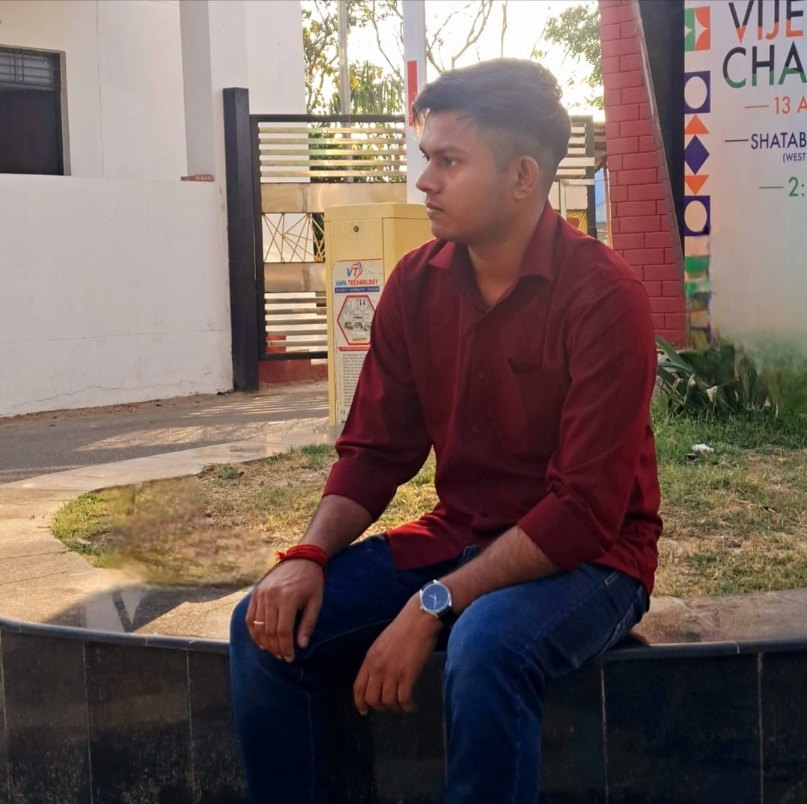

VANSH BARASWAL
FULL STACK DEVELOPER

SUMMARY
B.Tech student focused on full-stack web development, skilled in HTML,
CSS, JavaScript, and React.
Building projects using Node.js, Express, and MongoDB.
Familiar with Git, GitHub, and deployment tools. Eager to apply skills in
real-world internship opportunities.
EDUCATIONAL QUALIFICATIONS:
Bachelor of Technology, Information Technology, Harcourt Butler
Technical University, Kanpur [2024-2028]
Asha Modern School, Saharanpur [2009-2024]
Intermediate : 92.8%
High School : 96%
WORK EXPERIENCE:
NONE
SKILLS:
Front-End: HTML5 & CSS3 (Responsive Design, Flexbox, Grid) · JavaScript
(ES6, DOM Manipulation) · Bootstrap · React.js (Components, Hooks)
Back-End: Node.js · Express.js · RESTful API Developme
Database: MongoDB & Mongoose (CRUD Operations)
Deployment & Tools: Git & GitHub · Postman · Netlify · Render
ACHIEVEMENTS
Completed the “Quest for Purpose” course (IIT Kharagpur) — explored how
to align personal values with professional growth and societal impact,
gaining practical tools for purpose‑driven decision‑making.
MISCELLANEOUS
MY HOBBIES
LINKS
CONTACT ME
Copyright © 2023 Football History Archives. All Rights Reserved.